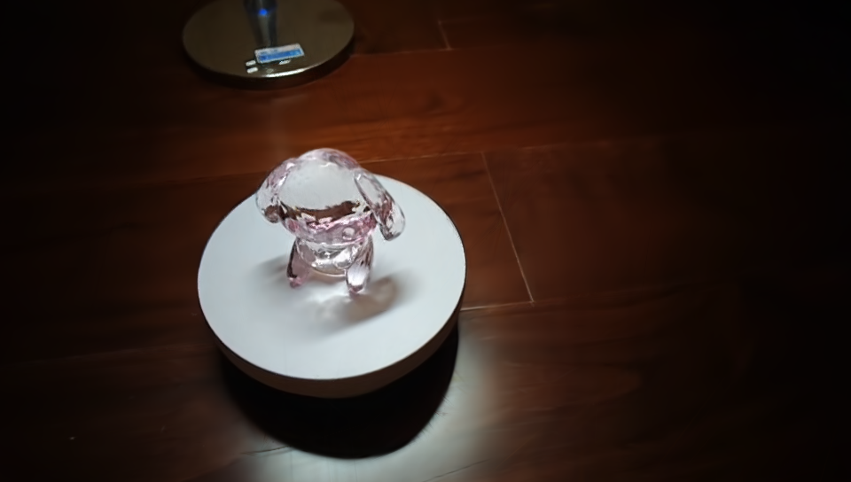

|
Jinrui Zhang I'm a forth-year student majoring in Computer Science at University of Electronic Science and Technology of China(UESTC). I am currently an exchange student at UCSD during Fall 2025. During my first and second year at college, I've been the senior TA in Roof Studio, where I've developed AI pipeline in game production and worked on several projects with Tencent, GACmotor and so forth. I am fortunate to work as an intern at UT Dallas advised by Prof. Xiaohu Guo on 3D cardiac structure reconstruction, also at MIT CSAIL supervised by Dr. Minghao Guo on procedural modeling for 3D generation, and previously at Nanjing University guided by Prof. Beibei Wang on transparent object reconstruction. I'm now looking for 2026 Fall Ph.D position |

|
ResearchMy research interests lie in computer graphics, computer vision, machine learning and generative AI. Currently, I am focusing on high quality 3D reconstruction of the real world objects. I'm also interested in high-performance computing/rendering on modern graphics architecture. CourseworkGPA 3.97/4.00 (Top 5) HonorsMeritorious winner in Mathematical Contest in Modeling (MCM) 2025 First-Class Student Scholarship by UESTC (Twice, Top 5%) |
|

|
TransCG: High quality reconstruction of tranparent object
Jinrui Zhang, Yuheng Xu, Zihan Yi Adivsed by Prof.Beibei Wang and Yifei Li project poster A breakthrough solution through three innovations: First, a differentiable ray-tracing module integrated with 2D Gaussian representation that simulates refraction/reflection at transparent interfaces. Second, a VGGSfM-based reconstruction pipeline to overcome traditional SfM failures on transparent objects. Finally, adaptive spherical harmonics optimization and covariance regularization techniques to maintain geometric stability during training. |

|
Opti-Instant-ngp: A Video-to-Mesh Pipeline
Jinrui Zhang, Jiayi Sheng, Mingxiang Bian, Yuhan Li project poster An streamlined approach for turning a video into a 3D mesh that can be rendered in real-time, utilizing Instant-ngp. Ready to use for content creator. |

|
Auto-Verify: A Plug-and-Play Step-wise Verification and Self-Correction Pipeline in Mathematical Reasoning
Jiayi Sheng, Jinrui Zhang, Xuran Chen, Chenyang Deng Adivsed by Prof.Wotao Yin Preprint A “verify-then-self-correct” pipeline that can be applied to any math reasoning LLM at inference time without additional training. This framework aims to fully harness the model’s step-by-step self-refinement capability, guided by a pretrained verifier that evaluates and explains detected errors to identify and mitigate hallucination at each reasoning step. |

|
Ray Tracing Renderer with Bare C++
Github A ray tracing renderer without using any Graphics Library. Still supprt translusent materials, multi-resolution rendering and env mapping. |

|
Physics-Based OpenGL Renderer
A real-time Physically-Based Rendering pipeline, supporting metallic-roughness workflow and Image-based Lightning. |